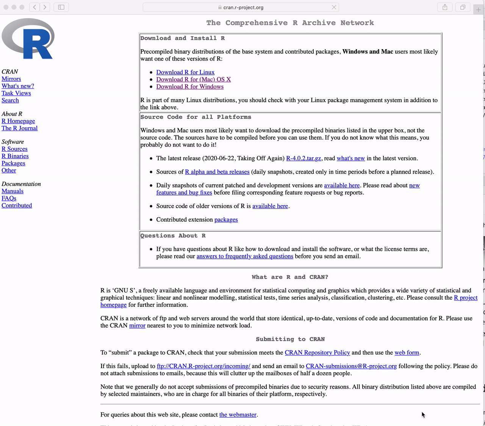

install.packages("tidyverse")This lecture, as the rest of the course, is adapted from the version Stephanie C. Hicks designed and maintained in 2021 and 2022. Check the recent changes to this file through the GitHub history.
Welcome! I am very excited to have you in our one-term (i.e. half a semester) course on Statistical Computing course number (140.776) offered by the Department of Biostatistics at the Johns Hopkins Bloomberg School of Public Health.
I’m excited to be back this year to teach “140.776 Statistical Computing” at @jhubiostat @JohnsHopkinsSPH 😊
This year, I decided to start with some music 🎶. I like part of the lyrics of this song, which talks about overcoming challenges, […]https://t.co/H5Uq6QhH4D
1/3 🧵 pic.twitter.com/pkRjefcokc— 🇲🇽 Leonardo Collado-Torres (@lcolladotor) August 27, 2024
This course is designed for ScM and PhD students at Johns Hopkins Bloomberg School of Public Health. I am pretty flexible about permitting outside students, but I want everyone to be aware of the goals and assumptions so no one feels like they are surprised by how the class works.
Note
The primary goal of the course is to teach you practical programming and computational skills required for the research and application of statistical methods.
This class is not designed to teach the theoretical aspects of statistical or computational methods, but rather the goal is to help with the practical issues related to setting up a statistical computing environment for data analyses, developing high-quality R packages, conducting reproducible data analyses, best practices for data visualization and writing code, and creating websites for personal or project use.
Assumptions and pre-requisites
The course is designed for students in the Johns Hopkins Biostatistics Masters and PhD programs. However, we do not assume a significant background in statistics. Specifically we assume:
1. You know the basics of at least one programming language (e.g. R or Python)
- If it’s not R, we assume that you are willing to spend the time to learn R
- You have heard of things such as control structures, functions, loops, etc
- Know the difference between different data types (e.g. character, numeric, etc)
- Know the basics of plotting (e.g. what is a scatterplot, histogram, etc)
2. You know the basics of computing environments
- You have access to a computing environment (i.e. locally on a laptop or working in the cloud)
- You generally feel comfortable with installing and working with software
3. You know the basics of statistics
- The central dogma (estimates, standard errors, basic distributions, etc.)
- Key statistical terms and methods
- Differences between estimation vs testing vs prediction
- Know how to fit and interpret basic statistical models (e.g. linear models)
4. You know the basics of reproducible research
- Difference between replication and reproducible. If not, check this excellent paper by Prasad Patil et al.: https://doi.org/10.1038/s41562-019-0629-z.
- Know how to cite references (e.g. like in a publication)
- Somewhat familiar with tools that enable reproducible research (In complete transparency, we will briefly cover these topics in the first week, but depending on your comfort level with them, this may impact whether you choose to continue with the course).
Since the target audience for this course is advanced students in statistics we will not be able to spend significant time covering these concepts and technologies. To give you some idea about how these prerequisites will impact your experience in the course, we will be using R for nearly all classes, we will be turning in all assignments via R Markdown documents and you will be encouraged (not required) to use git/GitHub to track changes to your code over time. The majority of the assignments will involve learning the practical issues around performing data analyses, building software packages, building websites, etc all using the R programming language. Data analyses you will perform will also often involve significant data extraction, cleaning, and transformation. We will learn about tools to do all of this, but hopefully most of this sounds familiar to you so you can focus on the concepts we will be teaching around best practices for statistical computing.
Tip
Some resources that may be useful if you feel you may be missing pieces of this background:
- Statistics - Mathematical Biostatistics Bootcamp I (Coursera); Mathematical Biostatistics Bootcamp II (Coursera)
- Basic Data Science - Cloud Data Science (Leanpub); Data Science Specialization (Coursera)
- Version Control - Github Learning Lab; Happy Git and Github for the useR
- Rmarkdown - Rmarkdown introduction
- R 101 LIBD rstats club blog post: https://research.libd.org/rstatsclub/2018/12/24/r_101/
- Introductory R videos from the LIBD rstats club such as these videos:
Getting set up
You must install R and Positron (alternatively you can use RStudio IDE; both are available from Posit) on your computing environment in order to complete this course.
These are three different applications that must be installed separately before they can be used together:
Ris the core underlying programming language and computing engine that we will be learning in this coursePositronis a new interface for working withRdeveloped by Posit (formerly RStudio). All new features are primarily being implemented inPositronand it will be ideal for working for bothRandPython. If you are choosing betweenRStudio IDEandPositron, check https://positron.posit.co/faqs.html#is-rstudio-going-away.RStudio IDEis an interface intoRthat makes many aspects of using and programmingRsimpler.
R, Positron, and RStudio IDE are available for Windows, macOS, and most flavors of Unix and Linux. Please download the version that is suitable for your computing setup.
Throughout the course, we will make use of numerous R add-on packages that must be installed over the Internet. Packages can be installed using the install.packages() function in R. For example, to install the tidyverse package, you can run
in the R console.
We will also be encourage you to use Git, following the Happy Git and GitHub for the useR book, to version control your code. Through the GitHub Education pack we will get free access to GitHub Copilot Pro to help us write code: think about it as an enhanced auto-complete. Alternatively, you can sign up for the 30 day Posit AI free trial, or get an account with another AI token provider. Finally, we’ll use Air for automatically formatting our R code.
How to Download R for Windows
Go to https://cran.r-project.org and
Click the link to “Download R for Windows”
Click on “base”
Click on “Download R 4.6.1 for Windows”
Warning
The version in the video is not the latest version of R. Please download the latest version.
How to Download R for the Mac
Go to https://cran.r-project.org and
Click the link to “Download R for (Mac) OS X”.
Click on “R-4.6.1-arm64.pkg” (for Apple Silicon Macs)
Warning
The version in the video is not the latest version of R. Please download the latest version.

How to Download Positron
Go to https://posit.co/ and
Click on “Free & Open Source” in the top menu
Click on “Positron” in the drop down menu
Click on “Download Positron” which will take you to https://positron.posit.co/download.html
Read the license agreement.
Accept the license agreement.
On the table with all the download options, choose the file that is appropriate for your operating system.
How to Download RStudio IDE
Go to https://posit.co/ (formerly https://rstudio.com) and
Click on “Free & Open Source” in the top menu
Click on “RStudio IDE” in the drop down menu
Click the button that says “DOWNLOAD RSTUDIO DESKTOP”
Click the button under “Download RStudio” which will take you to https://posit.co/download/rstudio-desktop/
Under the section “All Installers and Tarballs” choose the file that is appropriate for your operating system.
Warning
NOTE: The video shows how to download RStudio for the Mac but you should download RStudio for whatever computing setup you have

How to Download Git
Install Git on your computer following the detailed instructions at https://happygitwithr.com/install-git, which will depend on your operating system.
Create your GitHub account
Create a personal GitHub account following the instructions at https://docs.github.com/en/get-started/signing-up-for-github/signing-up-for-a-new-github-account.
Following Jeff Leek’s advice on How to be a modern scientist that was part of my team’s bootcamps at https://lcolladotor.github.io/bioc_team_ds/how-to-be-a-modern-scientist.html, try to choose a username that will be the same one you use on your email and other work-related social media platforms such as Bluesky, LinkedIn, etc.
If you are using Positron, under the “Accounts” options (bottom left corner), click on “Sign in with GitHub […]”, provide the 8 digit code, and authorize “posit-dev”.
How to Apply for GitHub Education and configure GitHub Copilot
Go to https://github.com/education and
- Click on “Join GitHub education” (likely https://github.com/settings/education/benefits?locale=en-US)
- Sign in to your GitHub account if you haven’t logged in
- Click on “Start Application”
- There will be a few options to verify that you are a student. One of them is by having a photo of your student ID with dates showing that your student ID is still valid. I’ve used a screenshot of my Faculty website at https://publichealth.jhu.edu/faculty/4647/leonardo-collado-torres when validating my information.
- Wait a few days for GitHub to process your application.
- Once your application has been approved, If you are using
Positron, follow the instructions at https://positron.posit.co/assistant to enable “Positron assistant”. Then under the “Positron Assistant” chat, click on “Add Anthropic as a Chat Provider”, then select “GitHub Copilot” and click “Sign in”.- Alternatively, you might want to sign up for the 30 day Posit AI free trial.
- You can pay out of pocket for Claude Anthropic at https://claude.ai/login as another option.
- If you are using
RStudio IDEfollow the instructions at https://docs.posit.co/ide/user/ide/guide/tools/copilot.html to enableGitHub CopilotinRStudio IDE. I have the “Index project files with GitHub Copilot” checkbox enabled on my preferences.
How to get Air (auto-code formatter)
Go to https://posit-dev.github.io/air/ and
Click on “VS Code and Positron” if you are using
Positron. That will take you to https://posit-dev.github.io/air/editor-vscode.html where some options and configuration steps are described. Note however, thatAiris already available fromPositron. You will need to open yoursettings.jsonfile from the Command Palette (Shift + Cmd + Pon Mac/Linux,Shift + Ctrl + Pon Windows):Run
Preferences: Open Workspace Settings (JSON)to modify workspace specific settings (recommended).Run
Preferences: Open User Settings (JSON)to modify global user settings (preferred option if you are not working with code from others). Then edit yoursettings.jsonwith the relevant lines about R code formatting andAiras shown below:{ "files.associations": { "renv.lock": "json" }, "positron.assistant.gitIntegration.enable": true, "positron.assistant.showTokenUsage.enable": true, "positron.assistant.toolDetails.enable": true, "[r]": { "editor.formatOnSave": true, "editor.defaultFormatter": "Posit.air-vscode" } }You can also configure a few options at positron://settings/air.dependencyLogLevels and related settings.
Click on “RStudio” if you are using
RStudio IDE. That will take you to https://posit-dev.github.io/air/editor-rstudio.html where you will find the detailed installation instructions.- Note that I recommend enabling the
Tools -> Global Options -> Code -> Savingand checkReformat documents on saveoption. Particularly if you are working on your own code.
- Note that I recommend enabling the
Learning Objectives
The goal is by the end of the class, students will be able to:
- Install and configure software necessary for a statistical programming environment
- Discuss generic programming language concepts as they are implemented in a high-level statistical language
- Write and debug code in
Rusingtidyversepackages (and integrate code fromPythonmodules) - Build basic data visualizations using
Rand thetidyverse - Discuss best practices for coding and reproducible research, basics of data ethics, basics of working with special data types, and basics of storing data
- Example of why keeping track of R versions is important: https://github.com/edward130603/BayesSpace/issues/150.
Course logistics
The only option is to take the course is in-person (140.776.01).
All communication for the course is going to take place on one of three platforms:
Courseplus: for discussion, sharing resources, collaborating, and announcements
- Important for practicing written communication in the context of asking for help with R
Github: for getting access to course materials (e.g. lectures, project assignments)
- Course Github: https://github.com/lcolladotor/jhustatcomputing
Lectures: lectures will be in person
- All in person lectures to be recorded and posted online after class ends
- If for some reason I am sick or not capable of coming onsite, I will send out a Zoom link for everyone to attend remotely for that day.
The primary communication for the class will go through Courseplus. That is where we will post course announcements, answer common questions, and as the primary means of communication between course participants and course instructors.
Important
If you are registered for the course, you should have access to Courseplus now. Once you have access you will also be able to find all material and dates/times of drop-in hours. Any Zoom links will be posted on Courseplus.
Course Staff
The course instructor this year is Leonardo Collado Torres who is an Investigator at the Lieber Institute for Brain Development and an Assistant Professor in the Department of Biostatistics at the Johns Hopkins Bloomberg School of Public Health. I was actually a student of this course in Fall 2012 when Roger D. Peng was the instructor of this course and Jenna Krall was the only teaching assistant. I first taught this course in 2023. I myself started learning and teaching about R in 2008 and we have a lot of material in the LIBD rstats club that you might be interested in.
At the Lieber Institute for Brain Development (LIBD), my group works on understanding the roots and signatures of disease (particularly psychiatric disorders) by zooming in across dimensions of gene activity. We achieve this by studying gene expression at all expression feature levels (genes, exons, exon-exon junctions, and un-annotated regions) and by using different gene expression measurement technologies (bulk RNA-seq, single cell/nucleus RNA-seq, and spatial transcriptomics) that provide finer biological resolution and localization of gene expression. We work closely with collaborators from LIBD as well as from Johns Hopkins University (JHU) and other institutions, which reflects the cross-disciplinary approach and diversity in expertise needed to further advance our understanding of high throughput biology.
Some weeks I use R and Bioconductor, and on some days I write R packages. Occasionally I write blog posts about them and other tools. I’m a co-founder of the LIBD rstats club and the CDSB community of R and Bioconductor developers in Mexico and Latin America, that we described at the R Consortium website. In the past, I also served on the Bioconductor Community Advisory Board.
If you want, you can find me on Bluesky, LinkedIn, among other places.
Teaching Assistants
We also have two amazing TAs this year:
- Lidio Jaimes Jr (ljaimes1@jh.edu): I am a second-year Biostatistics ScM student. My primary research interest is aging, particularly cognitive aging and Alzheimer’s disease, and I am currently working on methods for addressing attrition. During my free time, I enjoy traveling, watching documentaries, and keeping up with sports (soccer and college football).
- Bella Satpathy-Horton (ghorton2@jhmi.edu). I am an MD-PhD student in my third year of the PhD in Biostatistics. My research focuses on extracting latent structures across different data sets to improve phenotyping and risk prediction, with applications to chronic pain and substance use. In my free time, I’m mostly hanging out with my two dogs, but also enjoy puzzles and board games.
Assignment Due Dates
All course assignment due dates appear on the Schedule and Syllabus.
Grading
Philosophy
We believe the purpose of graduate education is to train you to be able to think for yourself and initiate and complete your own projects. We are super excited to talk to you about ideas, work out solutions with you, and help you to figure out how to produce professional data analyses. We do not think that graduate school grades are important for this purpose. This means that we do not care very much about graduate student grades.
That being said, we have to give you a grade so they will be:
- A - Excellent - 90%+
- B - Passing - 80%+
- C - Needs improvement - 70%+
We rarely give out grades below a C and if you consistently submit work, and do your best you are very likely to get an A or a B in the course.
When I was a JHBSPH student in 2011-2016, I had a scholarship from my country 🇲🇽 which had specific grade requirements, so I recognize that while most employers won’t care about your grades over your grad school projects, you might have strong reasons for aiming for high grades.
Relative weights
The grades are based on three projects (plus one entirely optional project to help you get set up). The breakdown of grading will be
- 33% for Project 1
- 33% for Project 2
- 34% for Project 3
If you submit an project solution, it is your own work, and it meets a basic level of completeness and effort you will get 100% for that project. If you submit a project solution, but it doesn’t meet basic completeness and effort you will receive 50%. If you do not submit an solution you will receive 0%.
Submitting assignments
Please write up your project solutions using R Markdown. In some cases, you will compile a R Markdown file into an HTML file and submit your HTML file to the dropbox on Courseplus. In other cases, you may create an R package or website. In all of the above, when applicable, show all your code and provide as much explanation / documentation as you can.
For each project, we will provide a time when we download the materials. We will assume whatever version we download at that time is what you are turning in.
Reproducibility
We will talk about reproducibility a bit during class, and it will be a part of the homework assignments as well. Reproducibility of scientific code is very challenging, so the faculty and TAs completely understand difficulties that arise. But we think that it is important that you practice reproducible research. In particular, your project assignments should perform the tasks that you are asked to do and create the figures and tables you are asked to make as a part of the compilation of your document. We will have some pointers for some issues that have come up as we announce the projects.
Code of Conduct
We are committed to providing a welcoming, inclusive, and harassment-free experience for everyone, regardless of gender, gender identity and expression, age, sexual orientation, disability, physical appearance, body size, race, ethnicity, religion (or lack thereof), political beliefs/leanings, or technology choices. We do not tolerate harassment of course participants in any form. Sexual language and imagery is not appropriate for any work event, including group meetings, conferences, talks, parties, Twitter, and other online media. This code of conduct applies to all course participants, including instructors and TAs, and applies to all modes of interaction, both in-person and online, including GitHub project repos, Slack channels, and Twitter.
I was also part of the Bioconductor Code of Conduct committee for a few years. You might find the Bioconductor Code of Conduct useful as it is translated into different languages by native speakers of said languages: https://bioconductor.github.io/bioc_coc_multilingual/.
Course participants violating these rules will be referred to leadership of the Department of Biostatistics and the Title IX coordinator at JHU and may face expulsion from the class.
All class participants agree to:
- Be considerate in speech and actions, and actively seek to acknowledge and respect the boundaries of other members.
- Be respectful. Disagreements happen, but do not require poor behavior or poor manners. Frustration is inevitable, but it should never turn into a personal attack. A community where people feel uncomfortable or threatened is not a productive one. Course participants should be respectful both of the other course participants and those outside the course.
- Refrain from demeaning, discriminatory, or harassing behavior and speech. Harassment includes, but is not limited to: deliberate intimidation; stalking; unwanted photography or recording; sustained or willful disruption of talks or other events; inappropriate physical contact; use of sexual or discriminatory imagery, comments, or jokes; and unwelcome sexual attention. If you feel that someone has harassed you or otherwise treated you inappropriately, please alert Leonardo Collado Torres.
- Take care of each other. Refrain from advocating for, or encouraging, any of the above behavior. And, if someone asks you to stop, then stop. Alert Leonardo Collado Torres if you notice a dangerous situation, someone in distress, or violations of this code of conduct, even if they seem inconsequential.
Need Help?
Please speak with Leonardo Collado Torres or one of the TAs. You can also reach out to Elizabeth Stuart, chair of the department of Biostatistics or Margaret Taub, Ombudsman for the Department of Biostatistics.
You may also reach out to any Hopkins resource for sexual harassment, discrimination, or misconduct:
- JHU Sexual Assault Helpline, 410-516-7333 (confidential)
- University Sexual Assault Response and Prevention website
- Johns Hopkins Compliance Hotline, 844-SPEAK2US (844-733-2528)
- Hopkins Policies Online
- JHU Office of Institutional Equity 410-516-8075 (nonconfidential)
- Johns Hopkins Student Assistance Program (JHSAP), 443-287-7000
- University Health Services, 410-955-1892
- The Faculty and Staff Assistance Program (FASAP), 443-997-7000
Feedback
We welcome feedback on this Code of Conduct.
License and attribution
This Code of Conduct is distributed under a Attribution-NonCommercial-ShareAlike 4.0 International (CC BY-NC-SA 4.0) license. Portions of above text comprised of language from the Codes of Conduct adopted by rOpenSci and Django, which are licensed by CC BY-SA 4.0 and CC BY 3.0. This work was further inspired by Ada Initiative’s ‘’how to design a code of conduct for your community’’ and Geek Feminism’s Code of conduct evaluations and expanded by Ashley Johnson and Shannon Ellis in the Jeff Leek group.
Academic Ethics
Students enrolled in the Bloomberg School of Public Health of The Johns Hopkins University assume an obligation to conduct themselves in a manner appropriate to the University’s mission as an institution of higher education. A student is obligated to refrain from acts which he or she knows, or under the circumstances has reason to know, impair the academic integrity of the University. Violations of academic integrity include, but are not limited to: cheating; plagiarism; knowingly furnishing false information to any agent of the University for inclusion in the academic record; violation of the rights and welfare of animal or human subjects in research; and misconduct as a member of either School or University committees or recognized groups or organizations.
Students should be familiar with the policies and procedures specified under Policy and Procedure Manual Student-01 (Academic Ethics), available on the school’s portal.
The faculty, staff and students of the Bloomberg School of Public Health and the Johns Hopkins University have the shared responsibility to conduct themselves in a manner that upholds the law and respects the rights of others. Students enrolled in the School are subject to the Student Conduct Code (detailed in Policy and Procedure Manual Student-06) and assume an obligation to conduct themselves in a manner which upholds the law and respects the rights of others. They are responsible for maintaining the academic integrity of the institution and for preserving an environment conducive to the safe pursuit of the School’s educational, research, and professional practice missions.
Disability Support Service
Students requiring accommodations for disabilities should register with Student Disability Service (SDS). It is the responsibility of the student to register for accommodations with SDS. Accommodations take effect upon approval and apply to the remainder of the time for which a student is registered and enrolled at the Bloomberg School of Public Health. Once you are f a student in your class has approved accommodations you will receive formal notification and the student will be encouraged to reach out. If you have questions about requesting accommodations, please contact BSPH.dss@jhu.edu.
Previous versions of the class
Typos and corrections
Feel free to submit typos/errors/etc via the GitHub repository associated with the class: https://github.com/lcolladotor/jhustatcomputing/issues. You will have the thanks of your grateful instructor!
R session information
options(width = 120)
sessioninfo::session_info()─ Session info ───────────────────────────────────────────────────────────────────────────────────────────────────────
setting value
version R version 4.6.1 (2026-06-24)
os macOS Tahoe 26.6.2
system aarch64, darwin23
ui X11
language (EN)
collate en_US.UTF-8
ctype en_US.UTF-8
tz America/New_York
date 2026-08-31
pandoc 3.10.1 @ /opt/homebrew/bin/ (via rmarkdown)
quarto 1.10.18 @ /Applications/quarto/bin/quarto
─ Packages ───────────────────────────────────────────────────────────────────────────────────────────────────────────
package * version date (UTC) lib source
cli 3.6.6 2026-04-09 [1] CRAN (R 4.6.0)
colorout * 1.3-3 2026-07-30 [1] Github (jalvesaq/colorout@64863bb)
coro 1.1.0 2024-11-05 [1] CRAN (R 4.6.0)
digest 0.6.39 2025-11-19 [1] CRAN (R 4.6.0)
ellmer 0.4.2 2026-07-13 [1] CRAN (R 4.6.1)
evaluate 1.0.5 2025-08-27 [1] CRAN (R 4.6.0)
fastmap 1.2.0 2024-05-15 [1] CRAN (R 4.6.0)
gitcreds 0.1.2 2022-09-08 [1] CRAN (R 4.6.0)
glue 1.8.1 2026-04-17 [1] CRAN (R 4.6.0)
htmltools 0.5.9 2025-12-04 [1] CRAN (R 4.6.0)
htmlwidgets 1.6.4 2023-12-06 [1] CRAN (R 4.6.0)
httr2 1.3.0 2026-07-13 [1] CRAN (R 4.6.1)
jsonlite 2.0.0 2025-03-27 [1] CRAN (R 4.6.0)
knitr 1.51 2025-12-20 [1] CRAN (R 4.6.0)
lifecycle 1.0.5 2026-01-08 [1] CRAN (R 4.6.0)
magrittr 2.0.5 2026-04-04 [1] CRAN (R 4.6.0)
otel 0.2.0 2025-08-29 [1] CRAN (R 4.6.0)
R6 2.6.1 2025-02-15 [1] CRAN (R 4.6.0)
rlang 1.3.0 2026-07-05 [1] CRAN (R 4.6.1)
rmarkdown 2.31 2026-03-26 [1] CRAN (R 4.6.0)
S7 0.2.2 2026-04-22 [1] CRAN (R 4.6.0)
sessioninfo 1.2.4 2026-06-04 [1] CRAN (R 4.6.0)
xfun 0.60 2026-07-09 [1] CRAN (R 4.6.1)
yaml 2.3.12 2025-12-10 [1] CRAN (R 4.6.0)
[1] /Library/Frameworks/R.framework/Versions/4.6/Resources/library
* ── Packages attached to the search path.
──────────────────────────────────────────────────────────────────────────────────────────────────────────────────────